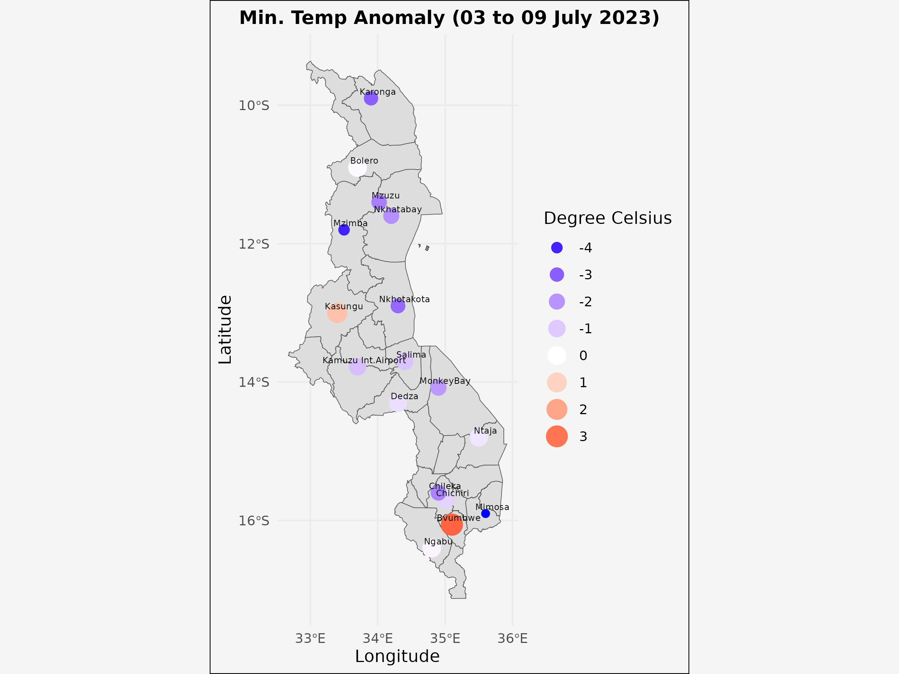
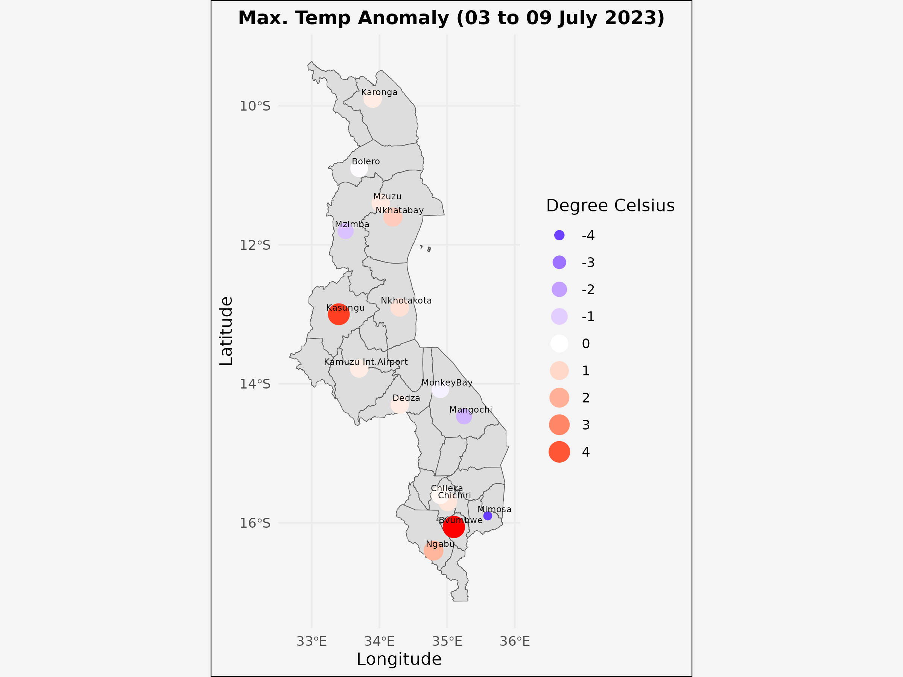

Weekly Weather Statement
10th to 16th July, 2023
Summary of Weather Ahead
From tomorrow 3rd July until Wednesday 5th July 2023, expect locally cold conditions during nighttime and early morning hours while partly cloudy and generally warm conditions during the daytime. It will also be windy and dusty at times. Mvuma winds are expected to occasionally be blowing over our lake water bodies, including Lake Malawi.
As from Thursday 6th July to Sunday 9th July 2023, expect Chiperoni weather accompanied by chilly, windy, and rain drizzle, particularly over highlands. Watch out for locally heavy rain over northern Malawi and foggy conditions in valleys and central highlands. Expect moderate to strong Mwera winds over Lake Malawi and other water bodies by Wednesday evening on 5th July 2023.
Weather During the Past Week
Kamuzu International Airport recorded the lowest minimum temperature of 06° Celsius on 26th June 2023. See figures below highlighting the variation in maximum and minimum temperatures recorded from 26th June to 1st July 2023 compared to July historical temperatures with warmer than average temperatures denoted by the color red.
 Advisories for the Coming Week
- Wear warm clothing, particularly the elderly and children.
- Those with asthmatic conditions (mphumu) need to be extra cautious.
- During foggy conditions, drivers should exercise caution due to reduced visibility.
- When strong winds occur, fishermen and all other lake users should take extra precautions.
- Avoid using charcoal burners in poorly ventilated houses.
For further information, please contact: The Director, Department of Climate Change and Meteorological Services, Ministry of Natural Resources and Climate Change, P. O. Box 1808, Blantyre, Malawi. Tel: (265) 882 266 579; Email: metdept@metmalawi.gov.mw, Website: www.metmalawi.gov.mw
Place of issue: Blantyre
Date of issue: Sunday 9th July, 2023